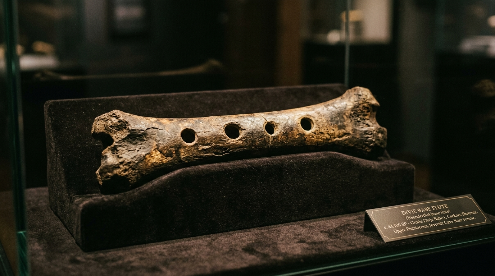
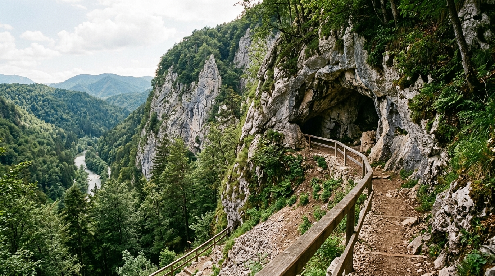
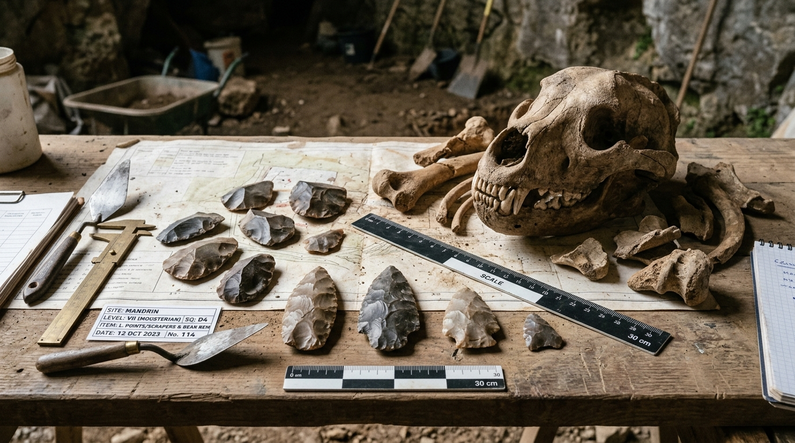
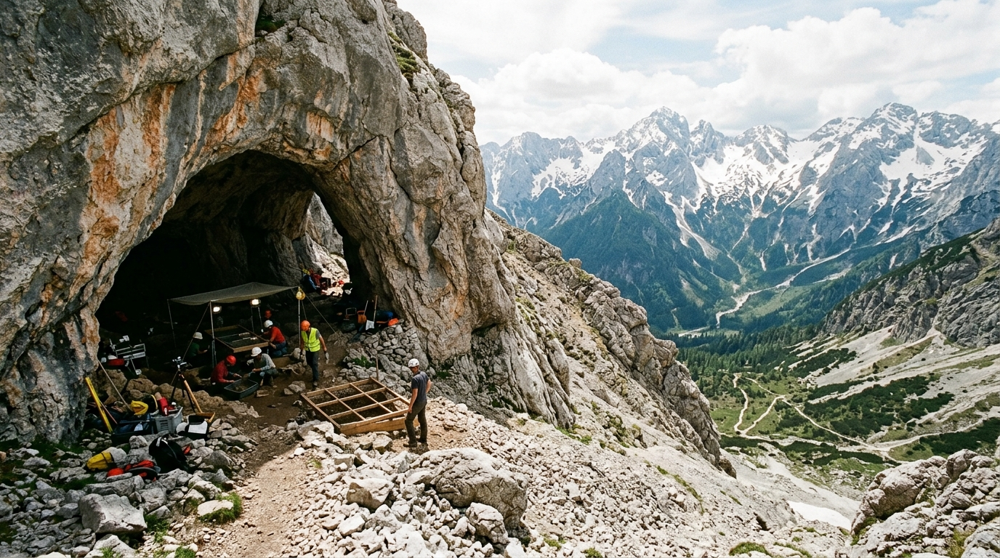
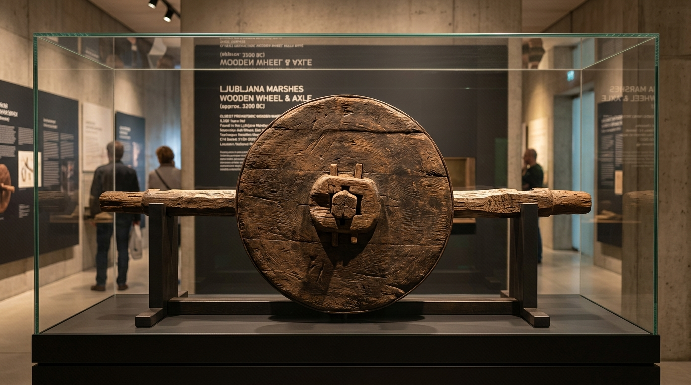
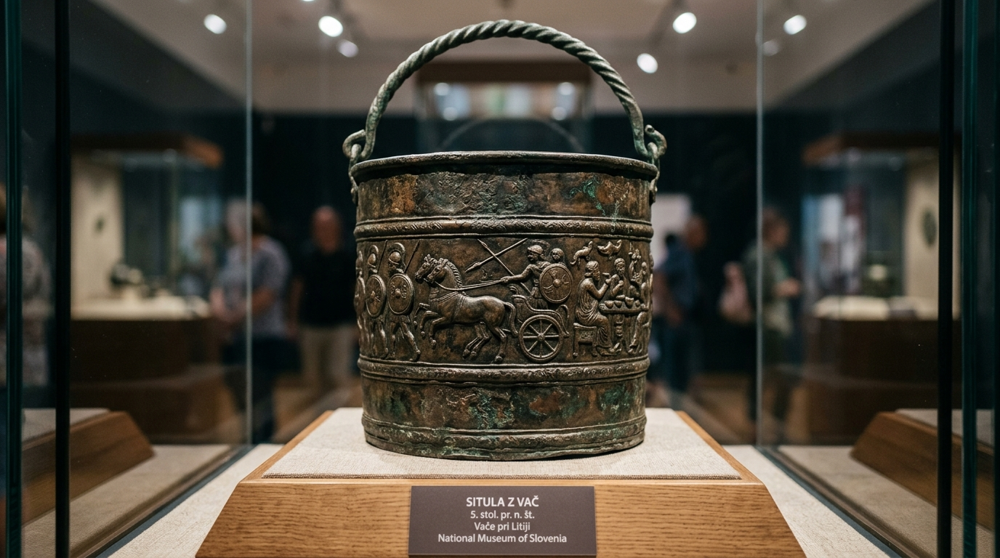
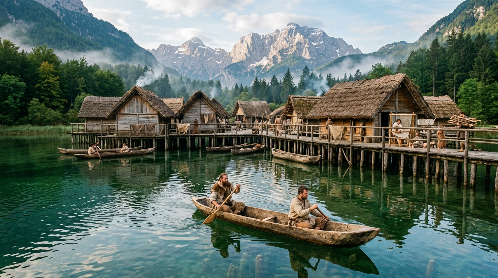
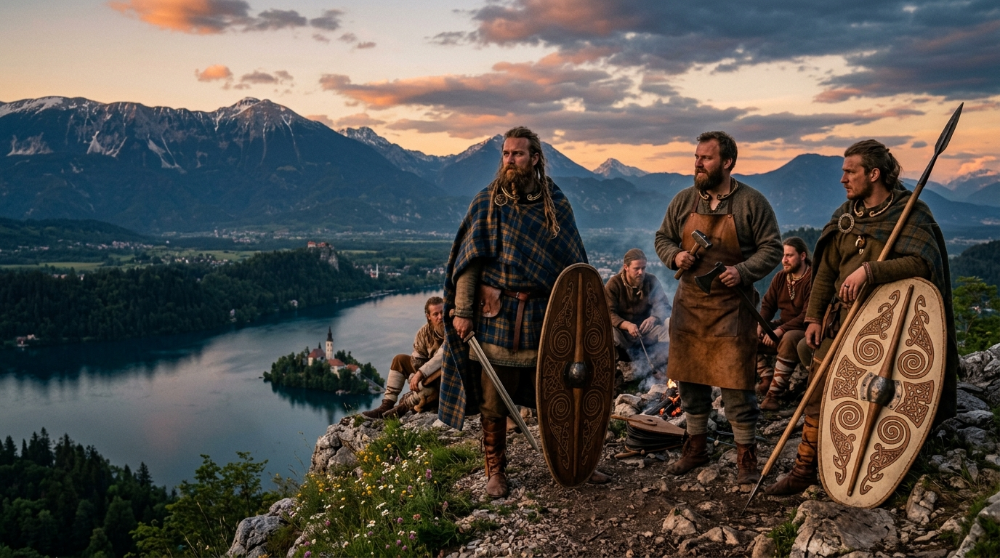
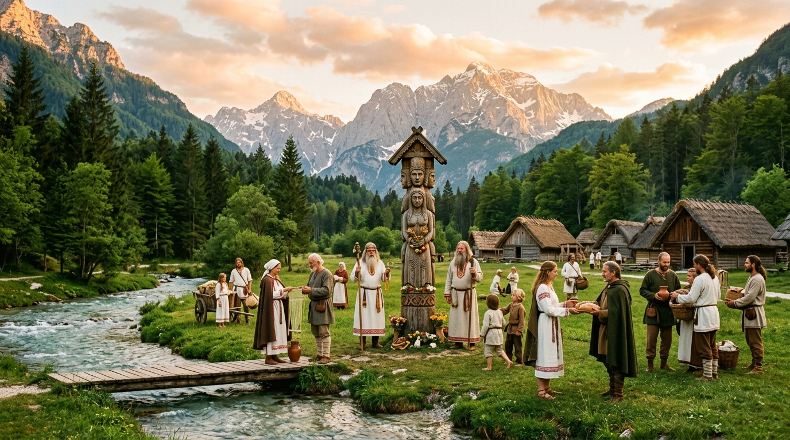

布萊德與阿爾卑斯原始居民遺址 GIS 地圖
基於 Leaflet.js 與 OpenStreetMap (OSM) 開源地理圖資，點擊地圖標記可展開出土文物實物照片與遺址詳解。
太古原始人出土實物與洞穴遺址特展
點擊任何照片可放大查看細節與考古地層測年數據。

人類最古老樂器 · 5.5 萬年迪夫耶貝貝骨笛真品實拍
保留人工鑽孔與骨管共鳴腔，證實尼安德塔人已具備自然音階與神聖音樂意識。

考古遺址實景迪夫耶貝貝洞穴峭壁遺址
座落於伊德里亞河谷懸崖之上，為尼安德塔人躲避冰河時期嚴寒與風暴的高山庇護所。

石器與動物骨骼莫斯特燧石石器與洞熊化石
考古工作台上展示的勒瓦婁哇剝片尖狀器，邊緣帶有明確的屠宰與皮革加工磨損痕跡。

高山智人洞穴 · 3.5 萬年波托奇卡洞穴高山考古現場
海拔 1,700 公尺絕壁洞口，由著名考古學家 Srečko Brodar 領導發掘，出土歐洲最古老骨針。

UNESCO 世界紀錄 · 5,200 年世界最古老木輪軸實物真品
斯洛維尼亞國家博物館展出，新石器湖泊干欄先民的偉大機械發明，比埃及大金字塔更古老！

鐵器時代國寶 · 前 5 世紀瓦切青銅坐壺浮雕本尊
展示了卡爾尼人與陶里斯奇人同時代阿爾卑斯先民的武士風尚、盛大祭典與金屬鑄造工藝。
考古學如何證明「尼安德塔人」與「早期智人」在此活動？
「尼安德塔人（Neanderthal）」與「克羅瑪儂人（Cro-Magnon）」的名稱，雖來自 1856 年德國尼安德河谷與 1868 年法國克羅瑪儂岩棚的初次命名地，但這僅代表學術上的「模式標本產地（Type Locality）」。 古人類學家在斯洛維尼亞阿爾卑斯區域透過以下五重相互印證的科學證據鏈，徹底確立了古人類的長期活動與定居：
在迪夫耶貝貝（Divje Babe）、貝托夫（Betalov spodmol）地層中發掘出尼安德塔人獨有的莫斯特文化（Mousterian）石器（勒瓦婁哇技術剝製的尖狀器與刮削器）；而在波托奇卡（Potočka zijalka）則出土早期智人（克羅瑪儂人）特有的奧瑞納石刃（Aurignacian blades）。
透過加速器質譜碳-14（AMS 14C）、電子自旋共振（ESR）與熱釋光測年（TL），對未擾動的洞穴沉積層進行精確測年，骨笛層位精確落在 55,000–60,000 年前，完全屬於尼安德塔人獨佔歐洲的舊石器中期。
在洞穴深處發掘出排列整齊的石砌用火爐灶、高溫炭化的松木灰燼，以及被烈火燒裂的洞熊與馬鹿碎骨，證實並非偶然路過，而是部族長期的避寒露營據點。
微痕分析（Microwear analysis）證實迪夫耶貝貝骨笛的 4 個孔洞是由燧石尖狀器以旋轉鑽孔手法人工加工而成；波托奇卡出土的骨針亦帶有極為精細的骨質研磨與穿線孔眼。
伴隨出土的洞熊（Ursus spelaeus）、岩羚羊與鹿類骨骼上，保留了清晰的人類石刃剝皮、剔肉與敲骨吸髓的 V 形切割痕跡，完整構成了古人類生活圖景。
在距斯洛維尼亞邊境僅數十公里的克拉皮納（Krapina），發掘出歐洲最大規模的尼安德塔人骨骼化石群（近 900 塊骨骼），與斯洛維尼亞阿爾卑斯洞穴群同屬同一個古人類生活圈。
史前最原始居民：尼安德塔人與世界最古老骨笛
斯洛維尼亞是全歐洲最重要的古人類發祥地之一。五萬五千年前的阿爾卑斯冰河時期，尼安德塔人在這片喀斯特石灰岩洞穴中生存繁衍。
迪夫耶貝貝骨笛（Divje Babe Flute）重大意義
在距離布萊德西南約 45 公里的迪夫耶貝貝洞穴（Divje Babe I Cave），考古學家於 1995 年在莫斯特文化層中發掘出了一根由幼年洞熊左側股骨人工精準穿孔製成的骨笛：
- 年代測定：經放射性與電子自旋共振測定，距今約 55,000 至 60,000 年。
- 人類意義：它是全人類已知最古老的樂器，比德國霍勒費爾斯的智人骨笛還早了近兩萬年。
- 音階結構：孔洞間距吻合自然多瑙河音階（全音與半音），證實尼安德塔人已具備抽象音樂思維與心靈意識。
隨後在距今約 35,000 年前，早期智人（克羅瑪儂人）進入阿爾卑斯山區，在海拔 1,700 公尺的波托奇卡洞穴（Potočka zijalka）留下了歐洲最古老的骨針與奧瑞納石刃，開啟了高山狩獵與骨器縫紉文明。

尼安德塔人部族在阿爾卑斯石灰岩洞穴邊圍繞火堆、吹響洞熊骨笛的想像重構
湖畔與水上木樁定居者：最古老木輪與布萊德湖獨木舟

新石器先民在布萊德湖與阿爾卑斯山巒間搭建干欄木樁房屋，乘獨木舟（Deblaki）捕魚穿梭
隨著末次冰河消退，阿爾卑斯冰川溶水注入山間盆地，造就了今日宛如藍綠寶石的布萊德冰川湖（Lake Bled）。 此時進入當地的居民是由歐洲西部狩獵採集者（WHG）與來自安納托利亞的早期歐洲農民（EEF）融匯而成的族群。
水上干欄木樁文化圈（Pile Dwellers / Mostiščarji, UNESCO）
在布萊德周邊及盧比亞納沼澤一帶，先民將數萬根削尖的橡木、梣木樁打入水底湖泥中，在水面上搭建防潮且防獸的高腳排屋（Kolišča）：
- 世界最古老木製輪軸（5,200 年前）：在盧比亞納沼澤 Stare Gmajne 遺址出土，比埃及金字塔更古老。
- 整木獨木舟（Deblaki）與布萊德島：先民以整根巨大橡木掏空製成平底獨木舟，布萊德湖心孤島正是他們在水上設立的天然庇護所。
歷史記載最早具名「原住民」：凱爾特卡爾尼人與陶里斯奇人
進入鐵器時代（約西元前 400 年起），古希臘地理學家偽斯基拉克斯（Pseudo-Scylax）與羅馬地理泰斗斯特拉波（Strabo）的史料中，第一次以文字記錄了這片阿爾卑斯土地上的具名原住民族群——凱爾特部族（Celts）。
「卡尼奧拉」地名活化石
卡爾尼人定居於朱利安阿爾卑斯山腳與克拉尼平原。布萊德所屬的斯洛維尼亞核心歷史大省「卡尼奧拉（Carniola / 斯語：Kranjska）」以及名城「克拉尼（Kranj / Carnium）」，其語源正來自這支原始原住民「卡爾尼人（Carni）」！
諾里庫姆高山冶鐵王國
陶里斯奇人建立了著名的阿爾卑斯凱爾特**諾里庫姆王國（Regnum Noricum）**，精於高山鐵礦冶煉，鍛造的「諾里克鋼（Ferrum Noricum）」名震羅馬。他們將布萊德湖心孤島視為水神 Belenus 的自然聖所。

凱爾特卡爾尼人（Carni）武士與鐵匠佇立在阿爾卑斯懸崖，俯瞰布萊德湖心神聖祭所
斯拉夫大遷徙與現代斯洛維尼亞人的千年基因交融

斯拉夫先民在阿爾卑斯山谷安家，立起愛神芝娃（Živa）與三頭神（Triglav）神木像，與在地原住民和睦共居
西元 6 世紀後期，早期斯拉夫人（Slavs）翻越喀爾巴阡山脈與潘諾尼亞平原，大舉湧入薩瓦河與朱利安阿爾卑斯山谷。
融合而非滅絕：雙向同化與血統疊加
考古學與人類學證據明確證實：斯拉夫人進駐後並未將原住民消滅，而是與殘存的羅馬化凱爾特人（Carni 部落後裔）深度混血與文化共生：
- 技術傳承：在地凱爾特原住民將高山冶鐵、梯田農耕、水上航渡與山區地名傳授給斯拉夫人。
- 神話轉化：布萊德湖心島上建起了供奉愛與豐饒女神芝娃（Živa）的神廟；阿爾卑斯最高峰則被尊為三頭神（Triglav）聖山。
- 中世紀演進：到了 8–9 世紀，芝娃神廟被改建為今日聞名全球的「布萊德聖母升天朝聖教堂」，延續了數千年的湖心神聖崇拜。
現代布萊德與斯洛維尼亞人的基因庫，實質上是一座由「古斯拉夫拓荒者 ＋ 原住凱爾特人（卡爾尼人） ＋ 羅馬化居民 ＋ 歐洲原初湖泊干欄先民」經歷數千年水乳交融而成的宏大複合體！